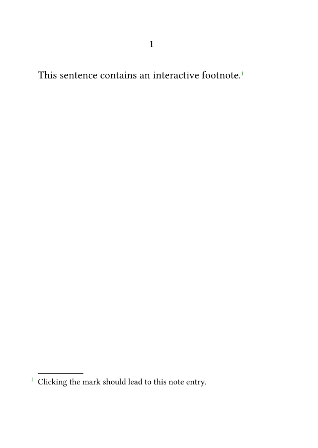
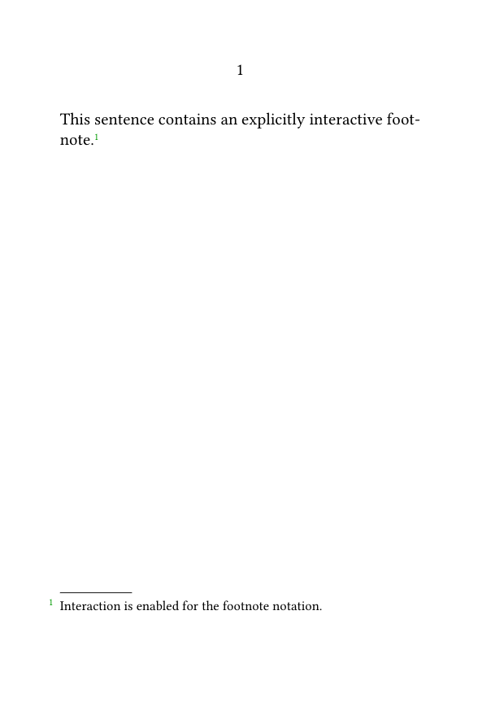
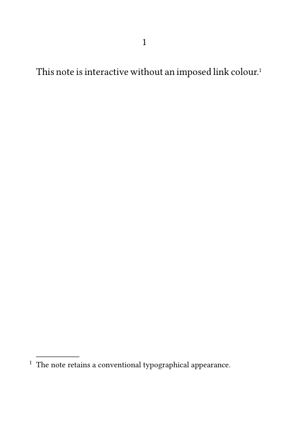
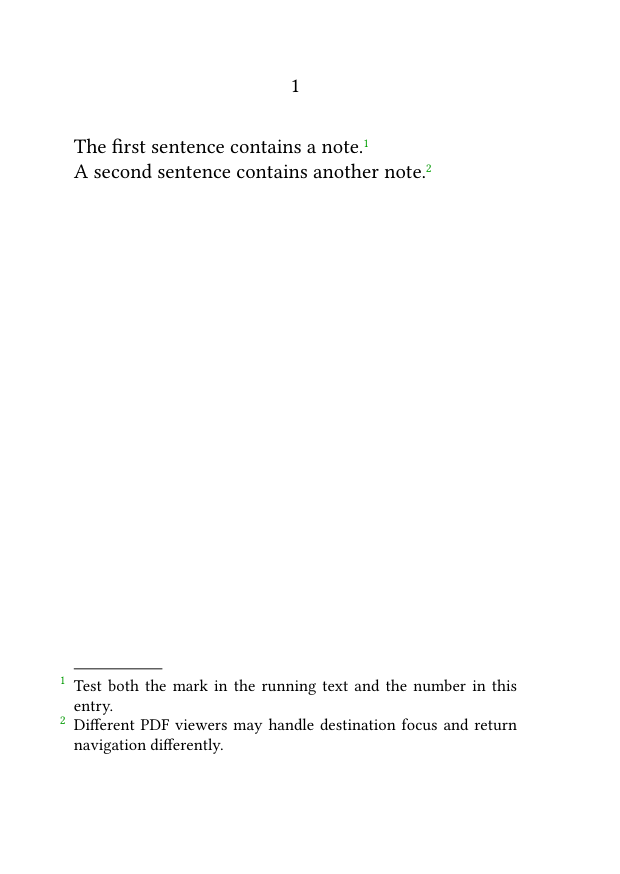
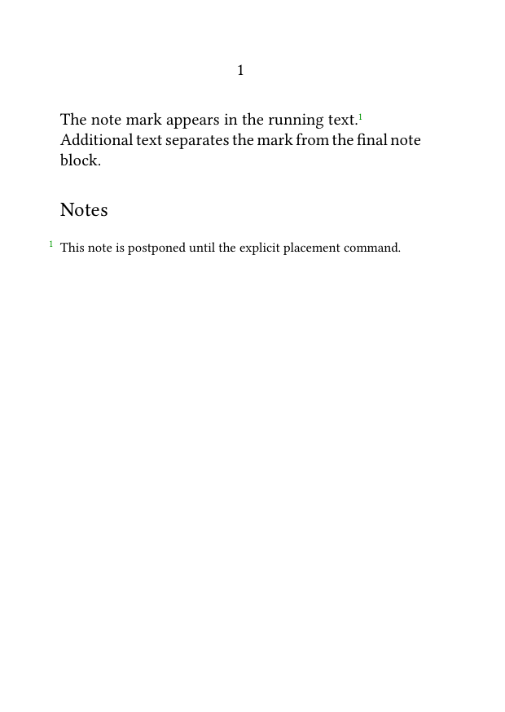
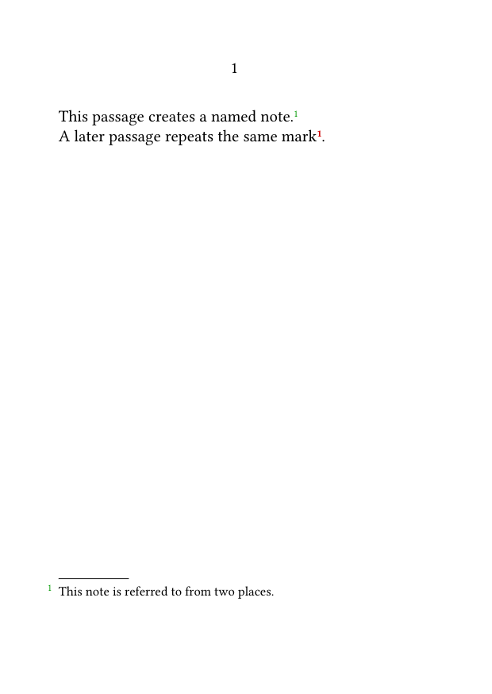
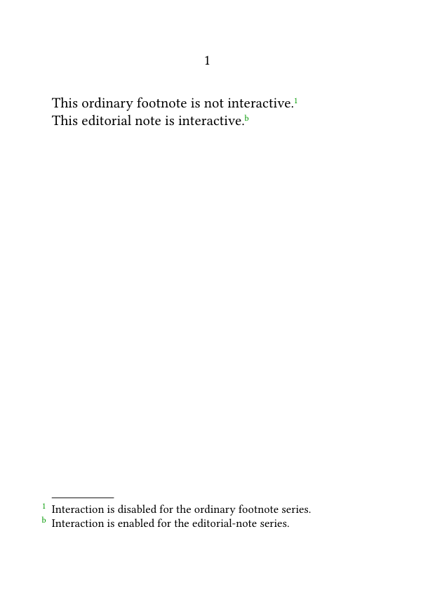
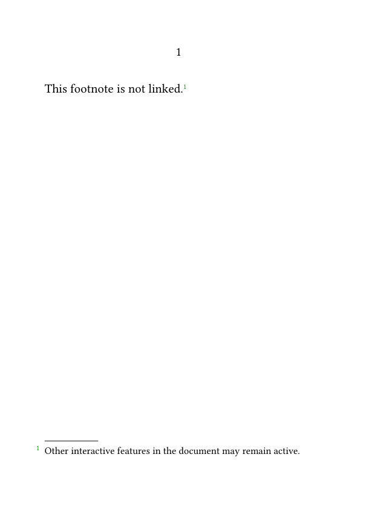
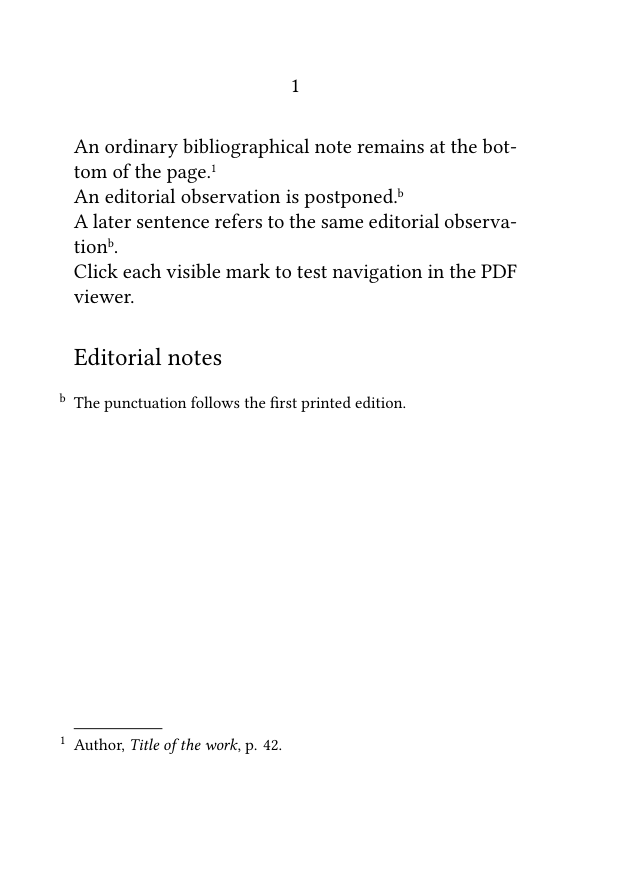

Footnotes in ConTeXt · Overview · Tutorial · How-to guides · Creating interactive footnotes · Reference · Explanation · Glossary
🚧 Under construction — This guide is currently being revised. Please do not modify its source code while this banner remains in place.
Interactive and digital output · Previous: Producing annotated and unannotated versions · How-to guides overview · Next: Typesetting notes in bidirectional documents
Contents
- 1 1. Goal
- 2 2. Enable PDF interaction globally
- 3 3. Enable interaction for a note series
- 4 4. Control the appearance of note links
- 5 5. Test forward and return navigation
- 6 6. Use interaction with postponed notes
- 7 7. Use interaction with named and repeated marks
- 8 8. Configure interaction for a custom note series
- 9 9. Disable interaction for one series
- 10 10. Design for screen and print
- 11 11. Understand the accessibility limits
-
12
12. Common mistakes
- 12.1 12.1. Forgetting to enable interaction globally
- 12.2 12.2. Using a link colour identical to the background
- 12.3 12.3. Expecting identical behaviour in every PDF viewer
- 12.4 12.4. Disabling all interaction to remove footnote links
- 12.5 12.5. Assuming a repeated mark has an unambiguous return destination
- 12.6 12.6. Testing only the wiki preview
- 12.7 12.7. Treating clickable notes as proof of accessibility
- 13 13. Complete example
- 14 14. What this guide has established
- 15 15. Next steps
1. Goal
Create internal PDF links between note marks in the running text and their corresponding note entries.
Interactive notes are especially useful in:
- long electronic documents;
- scholarly editions with dense annotation;
- documents read mainly on screen;
- notes placed far from their marks;
- postponed notes and endnotes.
Result
Clicking a note mark can move the reader to the corresponding note entry. Depending on the PDF viewer and the note structure, clicking the note number may also provide return navigation.
2. Enable PDF interaction globally
Activate interactive PDF features with:
\setupinteraction [state=start]
2.1. MWE: a basic interactive footnote
-
\setuppapersize[A6] \setupbodyfont [libertinus,10pt] \setupinteraction [state=start] \starttext This sentence contains an interactive footnote.\footnote {Clicking the mark should lead to this note entry.} \stoptext
-

Compile the example and open the generated PDF in a viewer that supports internal document links.
Interaction is a PDF feature
A static image or wiki preview cannot demonstrate the links. Test the generated PDF itself.
3. Enable interaction for a note series
Interaction can be configured explicitly for the footnote notation:
\setupnotation [footnote] [interaction=yes]
3.1. MWE: explicit interaction for footnotes
-
\setuppapersize[A6] \setupbodyfont [libertinus,10pt] \setupinteraction [state=start] \setupnotation [footnote] [interaction=yes] \starttext This sentence contains an explicitly interactive footnote.\footnote {Interaction is enabled for the footnote notation.} \stoptext
-

The two settings have different roles:
| Setting | Role |
|---|---|
\setupinteraction[state=start]
|
Enables interactive PDF features globally. |
\setupnotation[footnote][interaction=yes]
|
Enables interaction for the footnote notation. |
Global PDF interaction must be active, and the note series must not have interaction disabled.
4. Control the appearance of note links
Use \setupinteraction to control the general appearance and destination behaviour of links.
For example:
\setupinteraction [state=start, color=LinkColor, contrastcolor=LinkColor, style=normal, focus=standard]
The principal settings are:
| Setting | Function |
|---|---|
color
|
Sets the colour used for ordinary links. |
contrastcolor
|
Sets a contrasting colour for links placed on coloured backgrounds. |
style
|
Sets the typographical style applied to links. |
focus=standard
|
Requests a standard destination view when a link is followed. |
4.1. Preserve conventional typography
Interactive note marks do not need to look like web links.
A restrained configuration is usually preferable:
\setupinteraction [state=start, color=, contrastcolor=, style=normal, focus=standard]
-
\setuppapersize[A6] \setupbodyfont [libertinus,10pt] \setupinteraction [state=start, color=, contrastcolor=, style=normal, focus=standard] \setupnotation [footnote] [interaction=yes] \starttext This note is interactive without an imposed link colour.\footnote {The note retains a conventional typographical appearance.} \stoptext
-

Compile this example with the current ConTeXt version and inspect the result in the PDF viewers used by the intended readers.
4.2. Use contrast colours carefully
A note mark placed on a coloured background may require a suitable contrastcolor.
For example:
\setupinteraction [state=start, color=DarkBlue, contrastcolor=white, style=normal]
Do not make the mark invisible
If the link colour matches the background, the note mark may appear to be missing even though the link exists.
Inspect note marks against every text and background colour used in the document.
An interactive footnote may involve two directions:
- from the note mark to the note entry;
- from the note number back to a mark in the running text.
5.1. MWE: test both directions
-
\setuppapersize[A6] \setupbodyfont [libertinus,10pt] \setupinteraction [state=start, focus=standard] \setupnotation [footnote] [interaction=yes] \starttext The first sentence contains a note.\footnote {Test both the mark in the running text and the number in this entry.} A second sentence contains another note.\footnote {Different PDF viewers may handle destination focus and return navigation differently.} \stoptext
-

Viewer behaviour varies
The internal links are written into the PDF, but zoom, focus, return navigation, highlighting, and keyboard behaviour may differ between PDF viewers.
Test at least:
- the link from the mark to the entry;
- any link from the entry back to the text;
- the viewer's own navigation-history command;
- keyboard navigation when relevant.
6. Use interaction with postponed notes
Interactive links are especially useful when note entries are placed at the end of a section, chapter, or document.
6.1. MWE: an interactive postponed footnote
-
\setuppapersize[A6] \setupbodyfont [libertinus,10pt] \setupinteraction [state=start, focus=standard] \setupnote [footnote] [location=text] \setupnotation [footnote] [interaction=yes] \starttext The note mark appears in the running text.\footnote {This note is postponed until the explicit placement command.} Additional text separates the mark from the final note block. \subject{Notes} \placefootnotes \stoptext
-

The internal link connects the note mark with the postponed entry.
For the placement mechanism itself, see:
7. Use interaction with named and repeated marks
A named note can be recalled later with \note.
7.1. MWE: several marks for one note entry
-
\setuppapersize[A6] \setupbodyfont [libertinus,10pt] \setupinteraction [state=start, focus=standard] \setupnotation [footnote] [interaction=yes] \starttext This passage creates a named note.\footnote[foot:shared] {This note is referred to from two places.} A later passage repeats the same mark \note[foot:shared]. \stoptext
-

Both marks refer to the same note entry.
One destination, several calls
Several note marks may point to one shared entry. Return navigation may be ambiguous because the entry has more than one possible source mark.
For the reference mechanism, see:
8. Configure interaction for a custom note series
Interaction can be enabled independently for a custom note series.
8.1. MWE: interactive editorial notes only
-
\setuppapersize[A6] \setupbodyfont [libertinus,10pt] \setupinteraction [state=start, focus=standard] \definenote [EdNote] [footnote] \setupnotation [footnote] [interaction=no] \setupnotation [EdNote] [interaction=yes, numberconversion=characters] \starttext This ordinary footnote is not interactive.\footnote {Interaction is disabled for the ordinary footnote series.} This editorial note is interactive.\EdNote {Interaction is enabled for the editorial-note series.} \stoptext
-

This can be useful when:
- only one editorial layer is intended for screen navigation;
- different note series require different PDF behaviour;
- a particular output exposes only selected links.
For the definition of custom note series, see:
9. Disable interaction for one series
To retain other PDF links while disabling links for footnotes, use:
\setupnotation [footnote] [interaction=no]
9.1. MWE: disable footnote links only
-
\setuppapersize[A6] \setupbodyfont [libertinus,10pt] \setupinteraction [state=start] \setupnotation [footnote] [interaction=no] \starttext This footnote is not linked.\footnote {Other interactive features in the document may remain active.} \stoptext
-

Do not use:
\setupinteraction [state=stop]
unless every interactive PDF feature should be disabled.
10. Design for screen and print
Interactive links do not change the semantic function of a footnote.
In print:
- the note mark remains visible;
- the note entry remains visible;
- the internal link has no function;
- link styling may affect the printed appearance.
For documents intended for both screen and print:
- use restrained link styling;
- check legibility in grayscale;
- do not rely on colour alone;
- ensure that marks and entries remain understandable without interaction.
Design for both media
A well-designed interactive footnote should remain a normal, intelligible footnote when printed.
11. Understand the accessibility limits
Interactive navigation may help some keyboard and assistive-technology users, but clickable note marks do not by themselves make a PDF accessible.
Accessibility also depends on:
- document tagging;
- logical reading order;
- the PDF viewer;
- the assistive technology;
- keyboard access;
- the way note marks and note entries are announced.
Interaction is not the same as accessibility
Clickable destinations are useful, but accessibility requires separate testing with appropriate tools, viewers, and assistive technologies.
Do not describe a PDF as accessible merely because its note marks are clickable.
12. Common mistakes
12.1. Forgetting to enable interaction globally
A series-level setting cannot create working PDF interaction when global interaction is stopped.
12.2. Using a link colour identical to the background
The note mark may appear to be missing even though its link exists.
12.3. Expecting identical behaviour in every PDF viewer
Test the output in the viewers likely to be used by the intended readers.
12.4. Disabling all interaction to remove footnote links
Use:
\setupnotation [footnote] [interaction=no]
when only footnote links should be disabled.
12.5. Assuming a repeated mark has an unambiguous return destination
Several marks may point to one entry, while return navigation may not identify a unique source mark.
12.6. Testing only the wiki preview
A static preview cannot show internal PDF navigation.
Compile the MWE and test the generated PDF directly.
12.7. Treating clickable notes as proof of accessibility
Internal links are only one part of an accessible document.
Most frequent diagnostic error
A note link may exist even when it appears absent. Check the interaction colour, background colour, series settings, and PDF viewer before changing the note mechanism.
13. Complete example
The following MWE combines:
- global PDF interaction;
- conventional link styling;
- interactive ordinary footnotes;
- an interactive editorial-note series;
- letter numbering for editorial notes;
- postponed editorial-note placement;
- a named editorial note recalled from a second passage.
13.1. MWE: interactive ordinary and editorial notes
-
\setuppapersize[A6] \setupbodyfont [libertinus,10pt] \setupinteraction [state=start, color=, contrastcolor=, style=normal, focus=standard] \definenote [EdNote] [footnote] \setupnote [footnote] [bodyfont=small] \setupnotation [footnote] [interaction=yes, numberconversion=numbers] \setupnote [EdNote] [location=text, bodyfont=small] \setupnotation [EdNote] [interaction=yes, numberconversion=characters] \starttext An ordinary bibliographical note remains at the bottom of the page.\footnote {Author, \emph{Title of the work}, p. 42.} An editorial observation is postponed.\EdNote[ed:punctuation] {The punctuation follows the first printed edition.} A later sentence refers to the same editorial observation \note[EdNote][ed:punctuation]. Click each visible mark to test navigation in the PDF viewer. \subject{Editorial notes} \placenotes[EdNote] \stoptext
-

Compile the example and check that:
- the ordinary footnote mark links to the page-bottom entry;
- the editorial marks link to the postponed editorial entry;
- both editorial marks use the same letter;
- the links remain visually restrained;
- the note system remains intelligible when printed;
- navigation is tested in more than one PDF viewer.
14. What this guide has established
To create interactive footnotes:
-
enable PDF interaction with
\setupinteraction[state=start]; -
enable or disable links for each note series with
\setupnotation; - control link colour, contrast colour, style, and destination focus globally;
- test forward and return navigation in the generated PDF;
- use interaction with postponed notes and stable internal references;
- configure custom note series independently;
- disable links per series rather than disabling all interaction;
- test both screen and print output;
- distinguish interactivity from accessibility.
The central principle is that interaction adds navigation to the note structure; it does not replace that structure.
15. Next steps
15.1. Continue with the next guide
- Produce annotated and unannotated versions
- Place footnotes at the end of a section or chapter
- Refer to a footnote more than once
- Define and manage multiple note series
- Include verbatim material in footnotes
15.3. Consult the documentation
- Consult the note-command reference
- Understand the note mechanism
- Check the terminology used in the footnote documentation
Interactive and digital output · Previous: Producing annotated and unannotated versions · How-to guides overview · Next: Typesetting notes in bidirectional documents
Footnotes in ConTeXt · Overview · Tutorial · How-to guides · Creating interactive footnotes · Reference · Explanation · Glossary